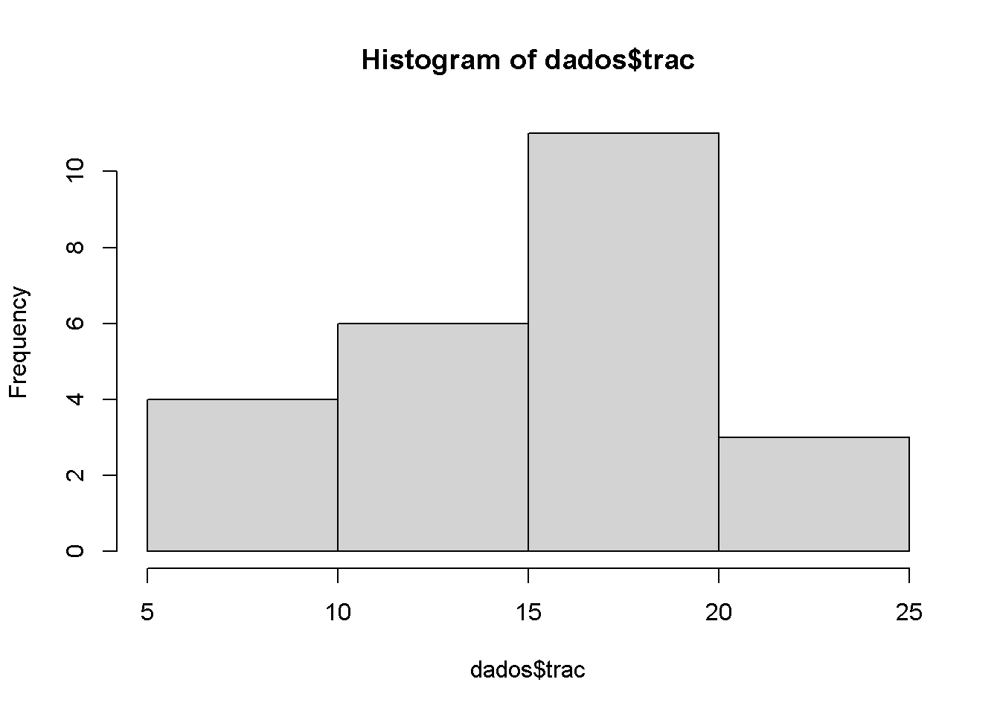
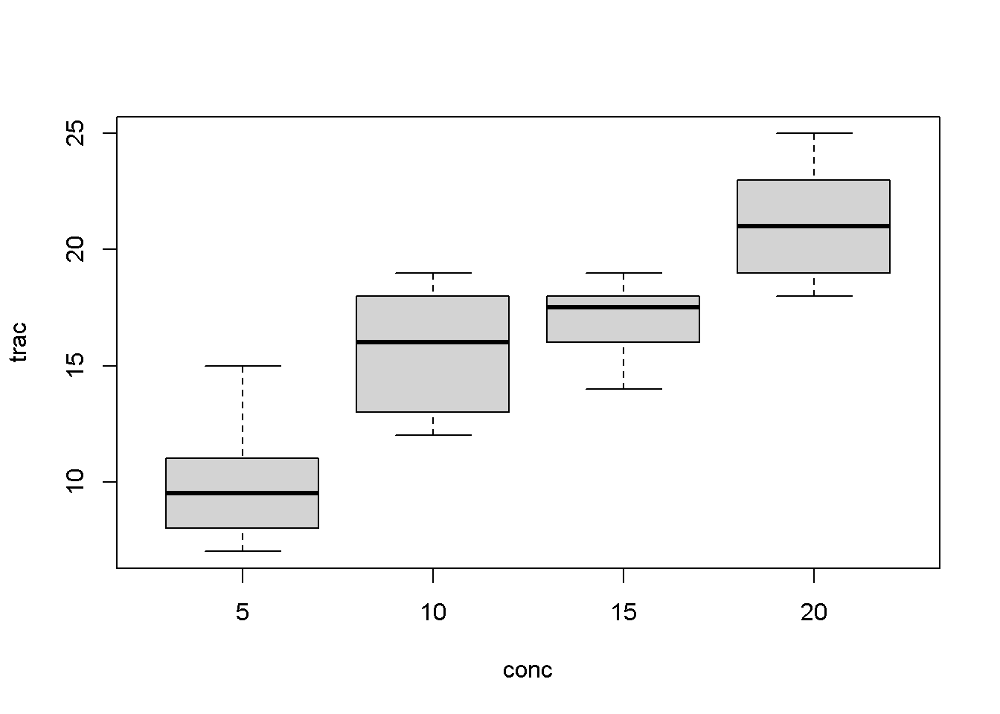
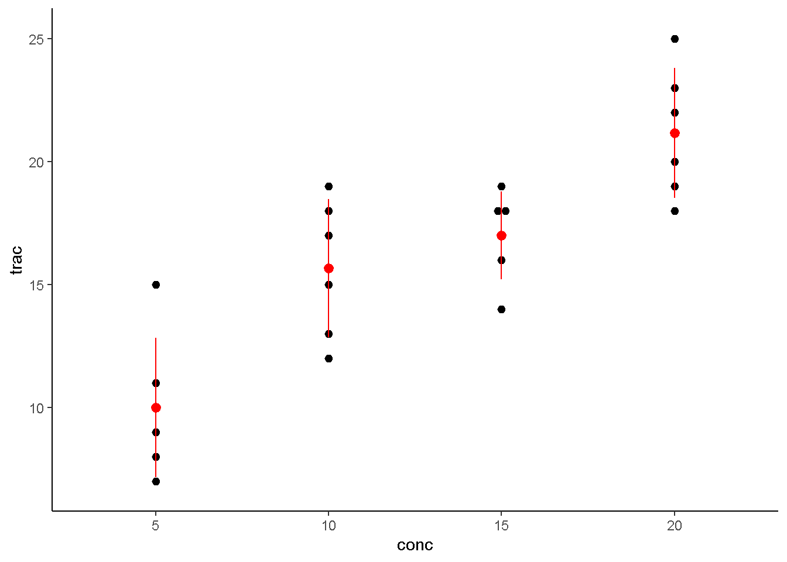
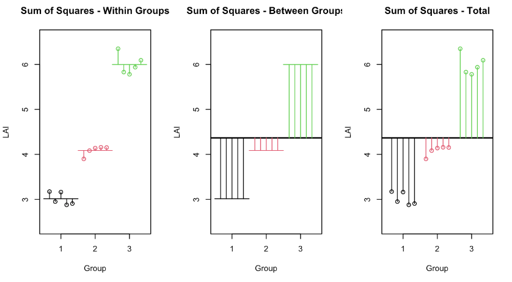
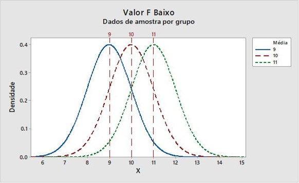
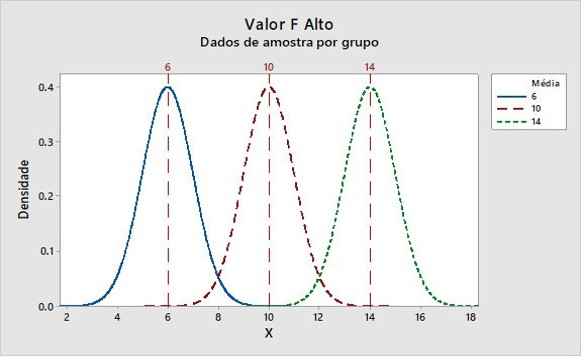
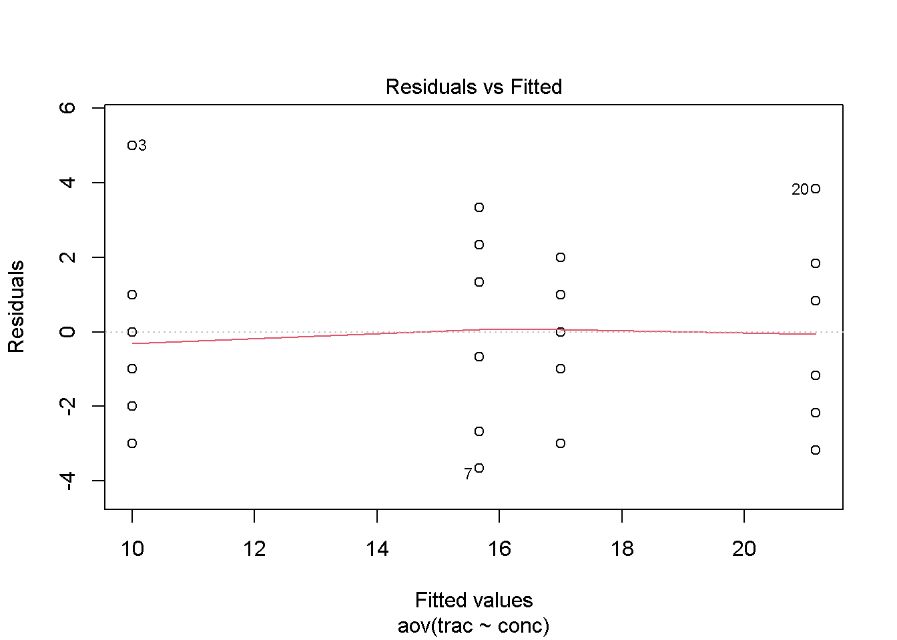
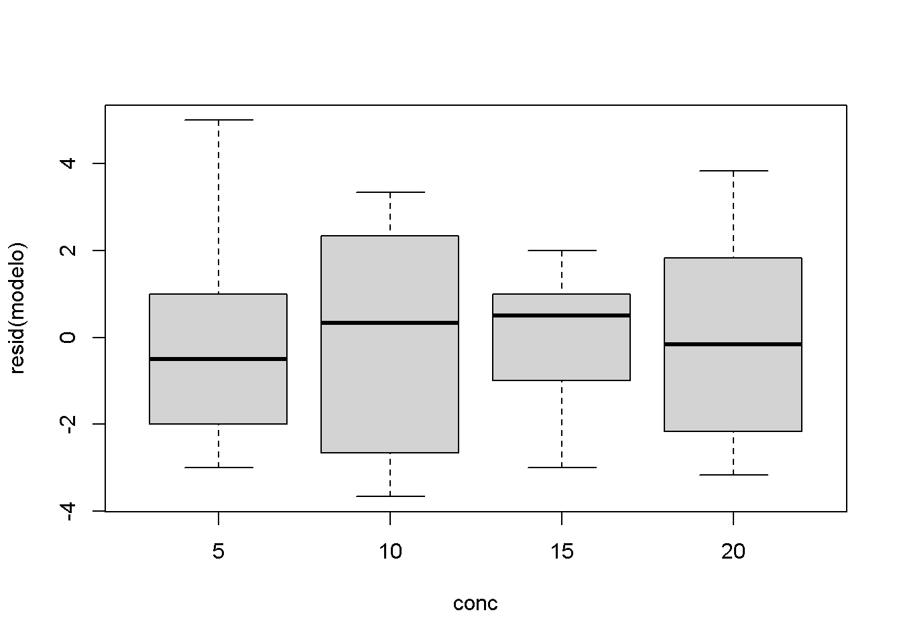
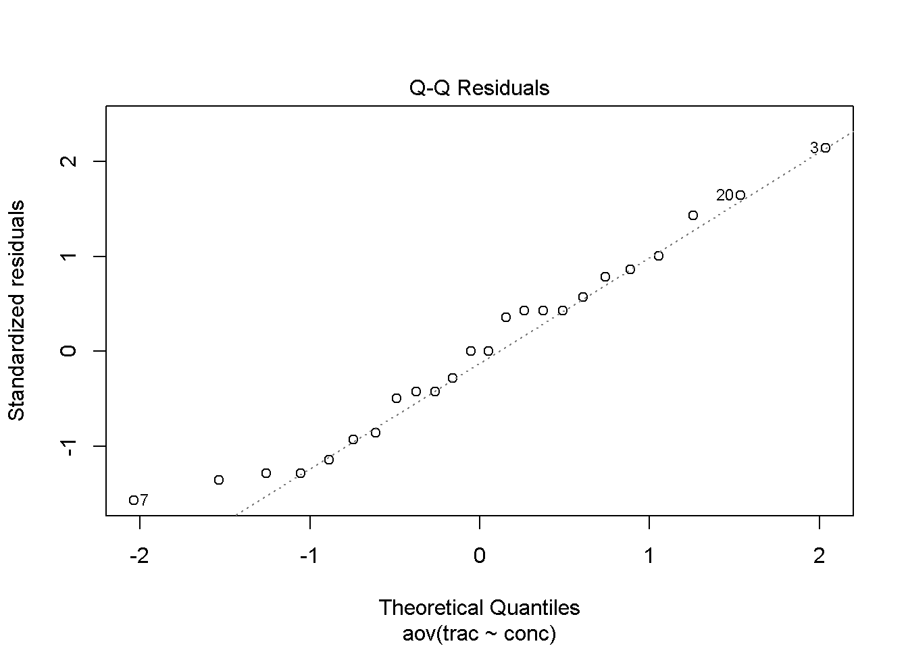

Capítulo 3 ANOVA - Delineamento Inteiramento Casualizado
3.1 Introdução
- O Delineamento Inteiramente Casualizado (DIC) é o de mais simples aplicação
- Utilizado quando temos um único fator em análise e seus diferentes níveis ou grupos (tratamentos)
- Consiste na casualização completa dos tratamentos às unidades experimentais
- Envolve os seguintes princípios experimentais:
- Repetição
- Casualização
- Não há blocagem ou controle local pois as unidades experimentais são homogêneas
Exemplo
Um fabricante de papel está interessado em melhorar a qualidade do seu produto. A engenharia do produto pensa que a resistência à tração seja uma função da concentração de celulose na madeira e a que a faixa prática de interesse das concentrações esteja entre 5 e 20%. Um grupo de engenheiros responsáveis pelo estudo decide investigar quatro níveis de concentração: 5, 10, 15 e 20 %. Eles decidem fabricar seis corpos de prova para cada nível de concentração, usando uma planta piloto. Todos os 24 corpos de prova são testados, em uma ordem aleatória, em um equipamento de teste de laboratório, em que é mensurada a resistência à tração (psi=libra/polegada2). Verifique se a concentração de celulose apresenta efeito siginifcativo na resistência à tração (alfa = 5%). Os dados desse experimento são mostrados a seguir.
3.1.1 Interpretação
O que nós estamos testando? Qual o objetivo do experimento?
- Verificar o efeito da concentração de celulose da madeira na resistência à tração do papel.
- Concentração de celulose: Variável Independente (1 Fator em estudo)
- Quatro níveis (5, 10, 15 e 20) ou Quatro tratamentos
- Natureza da variável: Quantitativa
- Resistência à tração: Variável Resposta (Quantitativa)
- Natureza da variável: Quantitativa
- Concentração de celulose: Variável Independente (1 Fator em estudo)
- Caracterização:
- I = 4 tratamentos
- J = 6 repetições
- N = I*J = 24 unidades experimentais
3.1.2 Dados
Tabela 1. Resistência (psi) à tração do papel em função da concentração de madeira de lei (%)

3.1.3 Input de Dados
- Podemos importar o data set a partir de um documento txt
- Nessa operação vamos criar um data-frame com dois vetores
- conc_%: vetor da variável independente
- r_trac: vetor da variável resposta
## conc trac
## 1 5 7
## 2 5 8
## 3 5 15
## 4 5 11
## 5 5 9
## 6 5 103.1.4 Estrutura do Data-Frame
- Podemos verificar a estrutura do nosso data-frame
## 'data.frame': 24 obs. of 2 variables:
## $ conc: int 5 5 5 5 5 5 10 10 10 10 ...
## $ trac: int 7 8 15 11 9 10 12 17 13 18 ...- Para a ANOVA temos que transformar o vetor da variável independente em fator
## 'data.frame': 24 obs. of 2 variables:
## $ conc: Factor w/ 4 levels "5","10","15",..: 1 1 1 1 1 1 2 2 2 2 ...
## $ trac: int 7 8 15 11 9 10 12 17 13 18 ...3.1.5 Análise Gráfica Exploratória
- Histograma da distribuição da variável resposta:

- Box-Plot da variável resposta em função dos tratamentos

- Um gráfico dot-plot mais elaborado com base no pacote ggplot2:
library(ggplot2)
ggplot(dados, aes(x = conc, y = trac)) +
geom_dotplot(binaxis = 'y', stackdir = 'center', dotsize = 0.5) +
stat_summary(fun.data = mean_sdl, fun.args = list(mult = 1),
geom = "pointrange", colour = "red") +
theme_classic()
3.2 Modelo Estatístico
3.2.1 Modelo Estatístico (1)
É um modelo linear:
yij = mu + ti + eij
Onde:
yij = observação da variável resposta para o i-ésimo tratamento e a j-ésima repetição; mu = média geral; ti = efeito do i-ésimo tratamento; eij = erro experimental com a pressuposição eij ~ NID(0; sigma^2)
Significa que vamos decompor as observações (dados coletados) no efeito da média geral, dos tratamentos e do erro experimental
3.3 Análise de Variância
3.3.1 Análise de Variância (1)
Para resolver o problema da análise de médias para dois ou mais grupos utilizamos a Análise de Variância
Vamos testar a hipótese:
- Ho: m1 = m2 = m3 = m4 = mu
- Isso corresponde a dizer que não existe o efeito de tratamentos no modelo e todas as médias são estatisticamente iguais à média geral
A hipótese alternativa pode ser dada por:
- Ha: Pelo menos uma média é diferente das demais
- Ou seja, existe influência do efeito de tratamentos no modelo. Pela ANOVA não podemos saber diretamente aonde estão estas diferenças. Mas “algo” está acontecendo em relação aos tratamentos testados
3.3.2 Análise de Variância (2)
- A técnica da ANOVA é uma decomposição da variância total nas variâncias dos efeitos do modelo. Veja a figura abaixo:

Figura. A técnica da ANOVA consiste em investigar as variâncias do modelo, através de uma descomposição de variâncias. A variância total é relativa à média geral (na figura ‘Grand Mean’). A variância dos tratamentos é a relação entre as médias dos tratamentos (‘Among Group Variance’) e a média geral. A variância residual (devida ao Erro Experiomental) é a variância dentro dos grupos de médias (‘Within Group Variance’), que consiste nos desvios de cada observação em relação à média de cada grupo (ou média de cada tratamento)
3.3.2.1 Decomposição das Somas de Quadrados (SQ)
Sabemos que uma variância pode ser calculada por:
S2 = SQD / gl
- Em que:
- SQD = Soma de Quadrados de Desvios
- gl = Graus de Liberdade
Portanto, vamos iniciar a decomposição via Somas de Quadrados (SQ) para cada efeito do modelo:
yij = m + ti + eij
SQTotal = SQTrat + SQRes
- SQTotal = ∑(yij - mu)2 (Desvios Quadráticos das observações em relação à média geral)
- SQTrat = J∑(mi - mu)2 (Desvios Quadráticos das médias de tratamentos em relação à média geral)
- SQRes = ∑(yij - mi)2 (Desvios Quadráticos das observações em relação às médias de tratamentos)

Figura. Exemplo de decomposição das Somas de Quadrados de um modelo estatístico no DIC. A Soma de Quadrados do Total (SQTotal) permite calcular os desvios quadráticos entre cada observação (yij) e a média geral (mu). A Soma de Quadrados de Tratamentos (SQTRat), que corresponde a variação entre grupos (Between Groups), consiste em calcular os desvios quadráticos das médias dos tratamentos (mi) e a média geral, permitindo computar a variação devido aos efeitos dos tratmentos. A Soma de Quadrado Residual (Dentro de Grupos) envolve o cálculo dos desvios de cada observação em relação à média dos tratamentos. Estes desvios correspondem à uma estimativa da variação do erro experimental.
3.3.3 Análise de Variância (3)
ANOVA é uma decomposição das variâncias do modelo
O que é uma variância?
S2 = SQD / gl
Já temos as Somas de Quadrados calculadas. Portanto, devemos calcular os Graus de Liberdade (gl) para cada fonte de variação do modelo:
- gl(Total) = I*J - 1 = N - 1 = 24 - 1 = 23
- gl(Trat) = I - 1 = 4 - 1 = 3
- gl(Res) = gl(Res) = gl(Total) - gl(Trat) = 23 - 3 = 20
3.3.4 Análise de Variância (4)
Finalmente podemos calcular as variâncias para as fontes de variação do efeitos do modelo.
Basta dividir as SQ pelo número de graus de liberdade correspondente:
Na ANOVA vamos chamar as variâncias de Quadrados Médios
- QMTotal = SQTotal / gl(Total)
- QMTrat = SQTrat / gl(Trat)
- QMRes = SQRes / gl(Res)
Agora vamos utilizar o teste F para verificar se a variância dos efeitos de tratamentos (QMTrat) é maior do que a variância resiual ou do erro experimental (QMRes):
- F = QMTrat / QMRes
3.3.5 Análise de Variância (5)
- A ANOVA pode ser realizada através de um comando simples no R
## Analysis of Variance Table
##
## Response: trac
## Df Sum Sq Mean Sq F value Pr(>F)
## conc 3 382.79 127.597 19.605 3.593e-06 ***
## Residuals 20 130.17 6.508
## ---
## Signif. codes: 0 '***' 0.001 '**' 0.01 '*' 0.05 '.' 0.1 ' ' 1O F calculado de F = 19,6 indica que o QMTrat (que é a variância dos efeitos dos tratamentos) é 19 vezes maior que o QMRes (Variância do Erro Experimental)
Associado a este valor de F, temos o p-valor = 3.593e-06 muito reduzido.
Os três asteriscos indicam que estamos rejeitando a hipótese H0 com um alfa próximo de 0% de probabilidade. Entretanto, o ideal é estabelcer um alfa previamente, que é probabildiade de erro tipo I (falso positivo). No exemplo, adimtimos um alfa = 0,05.
Logo rejeitamos Ho: m1 = m2 = m3 = m4 = mu
Portanto podemos concluir que os efeitos dos tratamentos apresentam uma grande contribuição em relação à variação total e superior aos efeitos do erro experimental.
Podemos dizer que os efeitos dos tratamentos (ti) exerce uma influência significativa na resistência à tração e o nosso modelo explica bem a variação dos dados!
Uma conclusão textual: “Pode-se verificar que as concetração de celulose na madeira apresenta efeito ‘significativo’ na resistência à tração do papel (alfa = 0,05)”
3.3.5.1 Interpretação do Teste F na ANOVA
- Podemos interpretar o teste F da seguinte forma:

Figura. Quando o valor da estatística F = QMTrat/QMRes é baixo, as diferenças entre as médias dos tratamentos são pequenas em relação à variação residual. O ‘tamanho’ dessas diferenças é medido indiretamente pelo QMTrat. Nesse caso, o valor-p > alfa, levando à não rejeição de H0. Ou seja, nessas condições experimentais não é possível captar a influência dos tratamentos sobre a variável resposta.

Figura. Quando o valor da estatística F = QMTrat/QMRes é alto, as diferenças entre as médias dos tratamentos são grandes em relação à variação residual. Nesse caso, o valor-p < alfa, levando à rejeição de H0. Ou seja, nessas condições experimentais é possível captar a influência dos tratamentos sobre a variável resposta, como é o caso do exemplo tabalhado.
3.3.6 Análise de Variância (6)
- Podemos explorar de outra forma os resultados, considerando um modelo linear com suas inclinações
modelo2 <- lm(trac ~ conc, data = dados) # Modelo Linear com inclinação
summary(modelo2) # Obter efeitos do modelo##
## Call:
## lm(formula = trac ~ conc, data = dados)
##
## Residuals:
## Min 1Q Median 3Q Max
## -3.667 -2.042 0.000 1.458 5.000
##
## Coefficients:
## Estimate Std. Error t value Pr(>|t|)
## (Intercept) 10.000 1.041 9.602 6.24e-09 ***
## conc10 5.667 1.473 3.847 0.001005 **
## conc15 7.000 1.473 4.753 0.000122 ***
## conc20 11.167 1.473 7.581 2.65e-07 ***
## ---
## Signif. codes: 0 '***' 0.001 '**' 0.01 '*' 0.05 '.' 0.1 ' ' 1
##
## Residual standard error: 2.551 on 20 degrees of freedom
## Multiple R-squared: 0.7462, Adjusted R-squared: 0.7082
## F-statistic: 19.61 on 3 and 20 DF, p-value: 3.593e-06## Analysis of Variance Table
##
## Response: trac
## Df Sum Sq Mean Sq F value Pr(>F)
## conc 3 382.79 127.597 19.605 3.593e-06 ***
## Residuals 20 130.17 6.508
## ---
## Signif. codes: 0 '***' 0.001 '**' 0.01 '*' 0.05 '.' 0.1 ' ' 13.4 Análise das Pressuposições
3.4.1 Análise das Pressuposições (1)
- Para validar o teste F, temos que estudar as pressuposições do modelo, que estão associadas ao erro experimental ou resíduo:
- eij ~ NID(0;sigma2)
- Normalidade dos Resíduos
- Independência dos Erros
- Homogeneidade das Variâncias
3.4.2 Análise das Pressuposições (2)
Análise Gráfica de Resíduos (ou Análise de Resíduos)
- Para avaliar a homogeneidade das variâncias, utilizamos o gráfico de Valores Ajustados vs Resíduos

Figura. Neste gráfico podemos observar a dispersão dos valores residuais em relação aos valores ajustados (‘Fited values’). Os valores ajustados são exatamente os valores das médias de tratamentos. Agora, nosso modelo é um modelo de predição, dado apenas por ‘yij = mi’. Nesse gráfico observamos a relação da variância dos resíduos (sigma2) para cada tratamento. Se as variâncias do erros são homogêneas, a dispersão dos erros para cada tratamento é próxima.
- Também podemos avaliar essa homogeneidade com base em um box-plot dos resíduos em função dos tratamentos, conforme a figura abaixo:

- Outra análise gráfica pode ser feita através do gráfico Quantil-Quantil Normal, que verifica a normalidade dos resíduos.

Figura. Neste gráfico os valores dos resíduos padronizados devem estar o mais próximo possível da linha teórica da normalidade. Quanto mais próximo, melhor o ajuste à normalidade
3.4.3 Análise das Pressuposições (3)
- A análise das pressuposções também pode ser feita através de testes estatísticos:
- Testes para Normalidade dos Resíduos (Teste de Shapiro-wilk)
- H0: eij ~ Normal
- Teste de Homogeneidade de Variâncias (Teste de Bartlett)
- H0: Variâncias Homogêneas
- Testes para Normalidade dos Resíduos (Teste de Shapiro-wilk)
##
## Shapiro-Wilk normality test
##
## data: resid(modelo)
## W = 0.96624, p-value = 0.5757##
## Bartlett test of homogeneity of variances
##
## data: trac by conc
## Bartlett's K-squared = 1.1352, df = 3, p-value = 0.76863.4.4 Análise das Pressuposições (4)
- O que fazer quando as pressuposições não são atendidas?
- Verificar a qualidade dos dados (presença de outliers)
- Testar algum tipo de transformação de dados na variável resposta
- Utilizar um teste não-paramétrico (‘Livre de Pressuposições’)
- Utilizar um Modelo Linear Generalizado para testar outras distribuições de resíduos, além da distribuição Normal (Ex: Binomial, Poisson, Gama, etc.)
- Se as violações não são graves, a ANOVA é robusta e o teste F ainda apresenta boas propriedades
3.5 Coeficiente de Variação Experimental
Permite avaliar a precisão do experiemnto:
- CV = 100 * Raiz(QMRes)/Média Geral
## [1] 15.98628- O CV pode ser interpretado da seguinte forma:
- CV < 10%: Alta precisão expreimental
- 10% < CV < 20%: Média precisão experimental
- 20% < CV < 30%: Baixa precisão experimental
- CV > 30%: Muito baixa precisão experimental